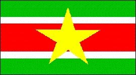

Suriname
|  |
Información general
Nombre oficial: República de Suriname.
Área: 163 265 km².
Costas: 386 km.
División política:10 Distritos
Distrito Capital
- Brokopondo Brokopondo
- Commewijne Nieuw Amsterdam
- Coronie Totness
- Marowijne Albina
- Nickerie Nieuw Nickerie
- Para Onverwatcht
- Saramacca Groningen Sipaliwini
- Wanica Lelydorp
- Paramaribo Paramaribo
Unidad monetaria: Florín de Sur
1 Florín de Sur = 100 centavos.
Idiomas: Holandés (oficial); inglés, sranang tongo, indostánico, javanés, chino, arauaco, caribe. árabe y diez pequeñas lenguas más (no oficiales).
Fiesta nacional: 25 de noviembre, Día de la Independencia.
Gentilicio: Surinamés.
Hora oficial: GMT -3 horas (normal/verano).
Miembro de: ONU, OEA.
Curiosidades
Suriname es la antigua Guayana Holandesa, una de las colonias más atrasadas de Holanda.
Suriname recibió inmigraciön india y japonesa desde el siglo pasado.
Perfil Ecónomico
Perfil Demográfico
Población: 449.000 hab.
Densidad de población: 2,7 hab/km²
Es uno de los países con menor de densidad de poblacion de América Latina
Perfil Cultural
Alfabetismo: 94 %.
Religión:
- Protestantes: 37,8%
- Católicos: 37,0%
- Musulmanes: 12,0%
- Religiones tribales: 5,0%
- Hinduístas: 12,8%
- Otros: 4,6%.
Sistema de Gobierno
Constitución vigente: Septiembre de 1987 (enmendada en 1992).
Sistema ejecutivo: Presidente, Vicepresidente (actúa como Primer Ministro), Gabinete.
Sistema legislativo: Asamblea Nacional (cincuenta y un miembros, electos por sufragio universal para un término de cinco años, elige al Presidente y al Vicepresidente, también para un término de cinco años)
Sistema judicial: Corte de Justicia y cortes cantonales.
Aproximación histórica
Situada entre Guyana y la Guayana francesa se encuentra Suriname. Su población no llega al medio millón de habitantes.
Suriname es una de las ex colonias de Holanda. Los primeros exploradores desembarcaron en ella al final del siglo XVI e inicios del siglo XVII. En 1667 Inglaterra cedió el país a Holanda a cambio de la entonces denominada ciudad de Nueva Amsterdam (actual Nueva York en los Estados Unidos de Norteamérica). La independencia se alcanza en 1975 en que el país pasa a llamarse Suriname.
Suriname ha recibido a lo largo de su historia inmigración india y japonesa.
Posee importantes yacimientos de bauxita. En su mayor parte, el territorio consiste en una meseta de escasa elevación, con ligeras pendientes y cubierta por la selva tropical. La zona costera es estrecha y por lo general arenosa o pantanosa. En ella se cultivan principalmente arroz, caña de azúcar, platanos y cítricos.
Su capital Paramaribo tiene algo menos de 200 000 habitantes.
«-- ir al comienzo
«-- regresar